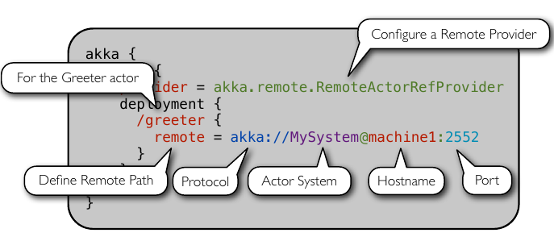
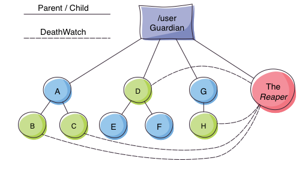

DIC Distributed Actor System
Table of Contents
This is part of Akka Actors with Scala.
1 Distributed Actor System

Figure 1: Distributed Actor System
1.1 Actor References
- Actor references may be obtained by (i) creating actors or (ii) looking them up
- Typically, we create actors beneath the guardian actor using the
ActorSystem.actorOfmethod and then … - Spawn the actor tree using
ActorContext.actorOf.
1.1.1 Looking up Actors by Concrete Path
ActorSystem.actorSelectionmethod- Send a message, such as the built-in
Identifymessage, to the actor and use thesenderreference of a reply from the actor. actorForis deprecated in favor ofactorSelectionbecause actor references acquired with actorFor behave differently for local and remote actors. Beware: actorOf vs. actorSelection vs. actorFor- Matching on paths similar to shells «*» and «?»:
context.actorSelection("../*") ! msg
1.1.2 Absolute vs. Relative Paths
- Send a message to a specific sibling:
context . actorSelection ("../brother") ! msg- Absolute paths:
context.actorSelection("/user/serviceA") ! msg
1.2 Remote Actors and Akka Clusters
- Remote Actors ActorSystem configuration

Figure 2: Remote Actors ActorSystem configuration
1.3 Clusters
- Automatic cluster-wide deployment
- Decentralized P2P gossip-based cluster membership
- Leader “election”
- Adaptive load-balancing (based on runtime metrics)
- Automatic replication with automatic fail-over upon node crash
- Automatic adaptive cluster rebalancing
- Highly available configuration service
1.4 Enable Clustering
akka {
actor {
provider = "akka.cluster.ClusterActorRefProvider"
...
}
extensions = ["akka.cluster.Cluster"]
cluster {
seed-nodes = [
"akka://ClusterSystem@127.0.0.1:2551",
"akka://ClusterSystem@127.0.0.1:2552"
]
auto-down = on
}
}
1.5 Remote Deployment

Figure 3: Remote Deployment
2 Termination
What Does "Finished" Mean? The most natural answer to this question appears to be, "When all the Mailboxes are empty." Natural, yes; correct, no. :)

Figure 4: Actor System terminated?
2.1 The Reaper

Figure 5: Actor System Reaper
2.2 Reaper Source Code
import akka.actor.{Actor, ActorRef, Terminated}
import scala.collection.mutable.ArrayBuffer
object Reaper { case class WatchMe(ref: ActorRef); }
abstract class Reaper extends Actor {
import Reaper._
val watched = ArrayBuffer.empty[ActorRef]
/* Derivations must implement this method. Called
* when everything is dead */
def allSoulsReaped(): Unit
final def receive = {
case WatchMe(ref) =>
context.watch(ref)
watched += ref
case Terminated(ref) =>
watched -= ref
if (watched.isEmpty) allSoulsReaped()
}
}
2.3 PoisonPill

Figure 6: Application with PoisonPill
3 References
- https://doc.akka.io/docs/akka/current/ Nearly all the code snippets and figures are from here. Reference.
- Jonas Boner, "Above the Clouds: Introducing Akka", 2011. Web search. Video or pdf. Highly recommended.